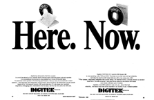

Corby's talk about  PL/I As a Tool for System Programming from Datamation's May 6, 1969 issue, is online thanks to Peter Flass.
PL/I As a Tool for System Programming from Datamation's May 6, 1969 issue, is online thanks to Peter Flass.
Bob Freiburghouse's paper, The Multics PL/1 Compiler is a thorough description of the version 1 PL/I compiler, available at this site.
 PL/I Frequently Asked Questions.
PL/I Frequently Asked Questions.
The Choice of PL/I
[THVV] The supervisor for CTSS, the early 1960s predecessor system to Multics, had been written almost entirely in the 7094 assembly program, FAP. At the time, almost all operating systems were written in assembler, because developers felt that compiled code was not efficient enough. One module of the CTSS supervisor, the scheduler, was written in the MAD language, in order to make repeated experimentation with the scheduling algorithm possible and safe. About half the command programs for CTSS were written in MAD. (See Corby's paper.)
[MDM] During my connection with Multics there never was any doubt that we'd use a higher level language. There was no question that it was possible: Burroughs had already written the B5000's operating system in a dialect of Algol. The only question was what language would allow us to write the programs we wanted without circumlocution or gross inefficiency. The big two languages in the US at the time were of course FORTRAN and COBOL, the latter of which got no respect in the scientific/academic community. (It didn't have full respect in the commercial community, either. When the ex-Multician Vic Vyssotsky took over the business data processing effort at Bell Labs, his predecessor assured him that it was a COBOL shop. Vic, who was the first administrator at that level to actually know about programming, walked around the shop and found that FORTRAN was overwhelmingly dominant; programmers' ways had nothing to do with management edicts.)
[MDM] Besides FORTRAN-- and Algol which was known if not used by most people on the project -- there were home-grown alternatives: MAD, which Bob Graham had brought from Michigan, AED-0, which Doug Ross had been developing, and PL/I, for which I was on the design team. MAD fully existed. Ross's group could do wonders with AED-0, but it was in constant flux; PL/I didn't exist, but had a convincingly complete specification.
[MDM] I recall, but only vaguely, a meeting at MIT where the subject of language was discussed. (Who else was there? Speak up. -- thvv) I knew PL/I thoroughly and was able to show how it fulfilled each desideratum that was raised: efficient manipulation of strings and bit fields, separate compilation, segment addressing, data structures, etc. MAD would have taken a lot of extension, and I don't recall anyone offering to do the work. AED-0 was touted as able to do everything, but most of us could not distinguish present fact about it from future dreams. (I think it lacked separate compilation at the time. -- thvv) The drawback of PL/I was that it had never been built and was huge. In one evening, I wrote a specification for the EPL (Early PL/I) subset--document 1 of the EPL design notebook. It was accepted and was scarcely modified thereafter.
Digitek
[MDM] The question of IBM's proprietary rights was never raised. The only problem was how to get a compiler. That task fell to me. Having made laboratory-grade compilers, I realized what a big job a production compiler would be, and figured we should turn to experts. There were a couple of plausible vendors: Computer Associates (of Massachusetts), who created wonderful compiling technology, and Digitek, which had industrialized the production of FORTRAN compilers. Though I knew CA well, I had witnessed their propensity to use contracts to further technology in preference to delivering a product, so I tried Digitek. They were in California, and I was an absolute novice in contracting. They liked the idea of getting in on the ground floor with a language IBM was hoping would displace FORTRAN, and proposed an eminently reasonable price. They did the usual thing of offering experienced people during negotiations, then bringing in new hands to do the work-- in this case just one new hand, whose heart was in the right place, but who knew no more than I did about when to call for help. I specified all the run-time conventions: calling sequences, data layouts, etc. Digitek was to emit assembly language to these specs. But I never specified any milestones. A year later, we took delivery of a preliminary kludge. One look at the actual code it produced convinced us that this dog wouldn't hunt.
[DBW] I guess it was in 1966, maybe 1967, that Bob Graham and I flew to Los Angeles to find out what Digitek was actually doing. We quickly became convinced that they were not going to deliver, and reported that to Corby. He told us to keep our findings secret, which put us in a spot in relation to our colleagues. As soon as I got back, Art Evans asked me, 'Are we winning or losing?' I didn't know how to handle that, so I said, 'It depends on what you mean by winning and losing', and Art replied, 'We're losing.'


Thanks to Peter Flass for the scan.
Click for a larger view.
[DBW] Just before our visit, Digitek had had an advertisement in (I think) Datamation which said, in 2-inch high letters, 'Here. Now.' And then words to the effect that Digitek had delivered a PL/I compiler to Bell Laboratories. Bob and I noticed on one of their internal bulletin boards a modification of the ad, saying, 'Where? How?'
[DBW] Someone told me that, although there was a penalty clause in Digitek's contract, GE wouldn't bother to enforce it because Digitek didn't have any resources, so they would just go bankrupt and GE wouldn't get anything for their trouble. Nevertheless I heard many years later, from Glenda Schroeder, that GE did in fact enforce the penalty clause, with the predicted result, just because someone was so angry.
EPL
Building the EPL Compiler
[MDM] In 1966, Bob Morris opined that he and I should do in a few months what Digitek had failed to do in a year. We did produce a compiler adequate for professionals, but not one that could be offered to unwashed users, as we expected Digitek to produce.
[MDM] Bob Morris suggested we make our own EPL compiler only after Digitek delivered an "early release", well behind schedule, that produced unbelievably pessimized code. Almost overnight Bob produced the first pass of the compiler, except for structures. I followed soon with the second, except for strings. The gaps were filled in a couple more months with the help of Dick Wexelblat and Dolores Leagus. It became operational in 1966.
[MDM] Soon after our compiler went into use, Morris decamped for an academic year at Berkeley. That would place the advent of EPL in midsummer 1966. Maintenance was left in my hands--a surprisingly small responsibility, though once I had to refer an obscure bug to Bob.
[MDM] Could we have done it a year earlier? Perhaps not: by now I knew exactly what shape code we needed; the language was more firmly in hand; the mysteries of the linkage segment were fully untangled, and so on. We had a tool: TMG. Bob McClure at TI had given it to me some time before, in the form of green coding sheets in FAP assembly code for the 7090 transliterated from his original code for the CDC 1604. The interpreter would be transliterated again to the 645 by Clem Pease, this time by the stratagem of defining 7090 opcodes as macros for the 645.
[MDM] Bob Morris, almost overnight, came up with a first pass that converted PL/I expressions to a printable intermediate language: instructions for a machine that had one-address operation codes, decorated by base, scale, mode, and precision. The intermediate language eventually also included data structure declarations. It had one diagnostic: "syntax error". I undertook a second pass, also in TMG, that converted this verbose assembly language into 645 assembler. It, too, had one diagnostic, for undefined identifiers. Dolores Leagus worked on accessing data structures.
[MDM] The whole thing was clumsy, but pioneers were using it soon enough. It was in full use by the time Bob Morris decamped for a sabbatical at Berkeley about six months later, though I had plenty of maintenance to do while he was away. (IBM didn't yet have a compiler in alpha test.) Jim Gimpel joined in to clean up the horribly inefficient code for bit fields, which abounded in important system tables and added the advisory diagnostic, "idiotic structure". The only change we ever made from Morris's first foray was to convert some parts of the intermediate language to three-address code so we could do better code generation on the fly.
[MDM] When we began, we did not know what the pass structure of the compiler would be, and the structure that happened, which used one-address pseudocode as an intermediate language turned out not to work well with string operations, which were implemented with 3-address subroutines. That we redid. For the original EPL team, then, the absence of MSPM specs was at most a hindrance. It must have been a pain, though, to the folks who came after and had to maintain the thing much longer than was expected.
[MDM] How might EPL have differed had it been specified in more detail? I suspect it wouldn't have used a textual intermediate language between the passes -- and that would have been a mistake! The fact that we did not need special support tools to look at the intermediate representation was a strength of the project. However, we probably would have had more than three diagnostics, which would have improved its image with customers immensely. It probably would have run faster, and probably would not have used TMG for code generation. That means it probably would have taken many months longer until delivery -- a lot of months, because our expertise was definitely in overnight compilers of which we had written many, not in production processors of which we had never written any.
[MDM] I have no idea of the pains that EPL users suffered, because we had our 645 for such a short time, used only by master programmers, who could laugh at the diagnostics, but were certainly not pleased with the throughput. Whatever further complaints arose can probably be attributed to its being used by a much larger community and to its having to be maintained by folks who were forced to dive in cold. Those complaints were undoubtedly justified. But I suspect that the complaints would have been much louder had we waited for the nonappearance of the Digitek compiler. It is possible that Multics would have died.
Using EPL
[THVV] The first versions of EPL ran on CTSS, and were extremely slow: a program of a few hundred lines would take all afternoon to compile (on an overloaded time-sharing system, true, but EPL compilations were far slower than MAD on the same system). As soon as possible, the compiler was converted over to run on Project MAC's GE-635 as a GECOS batch job. The CTSS command MRGEDT (Merge Editor) prepared a batch tape on a special tape drive on CTSS, which operators hand carried over to the 635 and input through the IMCV (Input Media Conversion) command. The EPL compiler was invoked by the batch stream and produced binary output, which could be run under the 645 simulator and returned to CTSS for use in later batch runs.
[THVV] When Multics became self-supporting, one major step was bootstrapping the EPL compiler yet again, to the 645. It remained extremely slow: doing an EPL compilation imposed such a load on the inefficient early version of Multics that we created an EPL Daemon, and issuing the epl command queued a request for the daemon to compile your program. This prevented thrashing from multiple versions of the compiler fighting for memory.
[DBW] Corby assigned me, Art, and Bob to a project to documenting the implementation of EPL. Later Bob Fenichel was added to the group, and he and I were the ones who actually did the work of finding out how things actually work.
[THVV] MSPM BN.0.00, EPL Compiler Documentation MSPM BN.0.00, EPL Compiler Documentation describes EPL. Almost all sections are dated in mid 1967.
[THVV] The early users of EPL also had to cope with an unstable compiler, with a long and often changing list of bugs in the compiler itself and in the runtime support library. Geographical separation, lack of machine resources, and differing organizational goals combined to create a frustrating and stressful environment.
EPL output
[THVV] The code produced by EPL was pretty bad initially. There was basically no optimization, and a simple PL/I statement might translate into a whole page of code. Accessing character data in the word-oriented 645 created a lot of load-mask-shift operations. As Doug mentions, the late Jim Gimpel studied the code produced by EPL and gave us a set of guidelines for structure definitions to avoid the introduction of padding, and to choose those structures that the EPL compiler was likely to be able to compile good code for. A structure that had elements sorted according to their boundary requirements was called a "Gimpelized" structure. Jim modified the compiler to produce comments on some of the lines of assembly language it produced, such as "a reference to baz." Jim also classified structure accessing into three flavors: aligned (?), synchronous, and idiotic. An idiotic structure was one that contained an array that began at a different place in the machine word for every element: he actually found that the Known Segment Table had a 37-bit array declared in it, requiring the compiler to generate many instructions to advance from one element to another.
[THVV] A lot of features of PL/I not needed for system programming, such as I/O statements and decimal data, were left out of EPL.
[THVV] MSPM BB.2, System Module Interfaces (PL/I Subset for System Programming) MSPM BB.2, System Module Interfaces (PL/I Subset for System Programming) describes some of the EPL conventions for storage allocation and data layout. These changed with later compilers.
REPL
[THVV/JWG] As we developed early versions of the system, we found that the PL/I language had many powerful features that could cause the EPL compiler to generate truly terrible code. Working with the compiler team, Bob Daley created a subset of the EPL subset of PL/I, to be used for programming the Multics supervisor and critical commands. The EPL compiler was modified to do an even better job in producing code for that language subset. This language, called "Restricted EPL" (REPL) was used for the initial version of the system. It is described in MSPM BB.2.01, EPL Subset for System Programming MSPM BB.2.01, EPL Subset for System Programming, dated January 1969.
[JWG] We then augmented and formalized the auditing process (peer review of all code submitted) to include checking that the required modules had been converted. We also built a source code checker that checked for compliance (albeit not perfectly) and used it to assist our process.
[JWG] I think this was an excellent example of engineering practice that is so frequently not done in many software projects. We had made the decision to build the system in PL/I, but since we had difficulties in getting a good compiler, the end result was a slow system. Instead of abandoning the goal for the whole system to be written in PL/I or requiring/waiting for a new compiler, we applied the principle of simplification to solve the problem (something we did so many times to handle performance problems). Establishing this language subset which only required minor repairs to the compiler and could be applied to the system incrementally coupled with changing our development process (enhanced by a few other simple tools) enabled us to obtain a major performance improvement to the system.
EPLBSA
[THVV] The EPL compiler compiled into 645 assembly language. There was a GE project to write a fancy assembler called FL, but it was lagging, so MIT Prof. Bill Poduska wrote a very simple assembler called the EPL Bootstrap Assembler, EPLBSA. (It was later replaced by the ALM assembler.)
[JDM] EPLBSA was written by Bill Poduska in a few weeks in 1966 during the spring semester simultaneous with the creation of EPL, MRGEDT, etc. It was written in GE 635 Fortran and looked a lot like CAP (Classroom Assembly Program) used as a teaching tool in MIT course 6.251. Fortran was supported by a set of list processing subroutines written in assembler modeled after Joe Weizenbaum's SLIP (symmetric list processor). The assembler's internal data structures were maintained in this "SLIP" data base.
[DBW] At some point I noticed that EPL produced code which at the beginning of any procedure hopped through the entire segment doing various kinds of initialization needed for each statement (compiled together with the statement). I stole a couple of big EPL programs from someone (can't remember who, maybe Molly Wagner) working on system stuff, compiled them, and reported to Corby that about ten percent of the code was transfers. More important, this implementation meant that the virtually all the pages of a procedure would be activated as soon as it was called, vitiating the point of paging. So he asked me to design multiple location counters for EPLBSA, whereafter this was implemented by someone else - can't remember his name, he was sometimes called The Prince.
[THVV] The EPLBSA code generated by EPL did its call, save, and return operations using an assembler pseudo-operation. These pseudo-ops saved and restored all 645 registers. When Version 1 PL/I was created, it compiled directly to object segments, eliminating the use of EPLBSA.
Multics Extensions to PL/I in EPL
[THVV] There was a lot of concern when we first chose PL/I about how to represent the unusual features of the Multics virtual memory environment in the language. The language designers chose to give a special meaning to the dollar sign, using it to separate a segment name from an entrypoint name. Thus foo$bar was interpreted as a reference to symbolic entry bar in the segment named foo. The code produced by the compiler counted on the Multics dynamic linker to search for segment foo and find bar within it when the symbol was actually referenced. Since the Multics file system distinguished between upper and lower case, external names had to be case sensitive, and without much discussion we chose to have all variable names be case sensitive.
[THVV] POINTER variables in the Multics PL/I implementation contain a segment number and an offset. Initially, while we were learning to program in PL/I, many programmers felt that they needed direct access to the parts of a pointer, and so a set of nonstandard built-in functions were also added to the compiler:
- baseptr
- generates a pointer to the first word of a segment whose number is given
- baseno
- yields an integer that is the segment number for a given pointer
- rel
- yields an integer that is the word-offset number for a given pointer
- ptr
- (two operand form) generates a pointer to the Nth word of a given segment
- addrel
- generates a pointer to the Nth word after the word designated by a given pointer
Multics Runtime Implementation
[THVV] The most important choices made as the system implementation began were those that created the Multics program execution environment on top of the basic addressing mechanisms provided by the GE-645. Many of these are beautifully described in Organick's book. Briefly, the combination of these features supported a language-neutral virtual machine for each process, one rich enough to support PL/I. This included:
Pure procedure. Many processes can share the same single copy of the machine instructions for a procedure, which is executed without modification for linkage or relocation. To accomplish this, the compiler output two files, the text segment containing the instructions, and the link segment containing a template for the per-process linkage and static data.
Recursive call. The execution model was based on a stack of procedure activations. This matched with the PL/I notions of AUTOMATIC versus STATIC storage. We chose to implement the stack for each process as a segment, and to allocate each procedure's stack frame as a higher range of addresses contiguous to its caller's frame.
Use of segments and segment registers. We chose to allocate a segment number in each process for each executable program. The same procedure might occupy different segment numbers in different processes. The initial plan was to also allocate another segment number for each procedure's linkage in each process, but this was soon changed to combining all linkage into a single segment. We established the convention that a particular pair of segment registers would point at the stack frame of the currently active procedure in a process, and that another pair of segment registers would point at the linkage segment for the active procedure.
Language neutral environment. The call, save, and return operations were multiple-instruction sequences. We chose to standardize them and to build permanent macros into the assembler that implemented them. These operations were intended to support not only PL/I and assembly coding, but also FORTRAN and other languages.
Storage classes and their implementation. The PL/I AUTOMATIC storage class was allocated in the procedure's stack frame. Since the size of some of these items could be adjustable, the size of the stack frame had to be computed by a prologue function at procedure entry before the frame could be allocated. STATIC storage was allocated in the linkage segment for the procedure. CONTROLLED storage was initially allocated in a per-process area, as were adjustable-length items such as VARYING strings. Use of such items therefore required that the compiler generate an epilogue that was executed before a procedure returned, in order to free any items allocated. We used a lot of BASED storage, in which a pointer is used to interpret a chunk of storage. MSPM BB.2, System Module Interfaces (PL/I Subset for System Programming) MSPM BB.2, System Module Interfaces (PL/I Subset for System Programming) describes the use of specifiers and dope by the EPL compiler for use in passing arguments between programs.
Use of include files. Early in development, we adopted the convention of declaring the structure of each system table in a separate file to be INCLUDEd by the compiler.
Design Evolution of Multics
[THVV] As the design of the operating system progressed, we made several changes in the implementation of the supervisor that affected the language implementation.
[THVV] One such change came about as we began to understand how to provide "rings of protection." This generalization of the master/slave state the processor was more focused on controlling accessibility of data, in order to protect correct operation of the supervisor. As we worked out how to provide cross-ring calls and how to protect inner rings from outer rings, we discovered that each ring had to have its own virtual execution machine, so stacks and linkage became per-ring.
[THVV] Other changes came about as we struggled to get the system to perform adequately. We sought opportunities to compact memory in order to avoid page and segment thrashing, and this need led us to combine all linkage segments in each ring into a single combined linkage section, and to create a facility called the binder to combine separately compiled routines into larger object files, like a traditional linkage editor.
[THVV] The version of Multics that was made available as a service at MIT in 1969 was all written in EPL.
Transition of EPL Compiler to GE
[JDM] The maintenance and support for EPL transferred to GE when Bell Labs pulled out of the Multics project. Axel Kvilekval and Bob Freiburghouse were the GE engineers. They were joined by Barry Wolman in summer or fall of 1968. Barry continued to maintain and support EPL while Bob phased over to the V1 PL/I project.
 Oral history interview with Robert (Bob) Freiburghouse, conducted by Gardner Hendrie on 28 February 2011, Computer History Museum
Oral history interview with Robert (Bob) Freiburghouse, conducted by Gardner Hendrie on 28 February 2011, Computer History Museum
Version 1 PL/I
[THVV] The EPL compiler was very definitely an interim tool, and GE had promised from the beginning to build a "real" compiler to replace it, that conformed to IBM's language spec Y33-6003-0. The compiler group at GE's Cambridge Information Systems Laboratory (CISL) began work on this task as soon as it was set up. Members of this group were
[JDM] V1 was started by RAF and me, Chang joined shortly thereafter. Barry was working on EPL while we got the front end going. I did the lexical and syntactic analyzer. Bob did the semantic phase with help from Chang. Bob also did a limited optimizer. Barry did the code generator. I did the pl1 command and some systems interfaces. Peter Belmont did the I/O system but that came after the initial release of V1 to the system programmers.
A chart showing coding progress was maintained by Bob Freiburghouse. The compiler was released in 1969.
Beginning in 1969, the development group expended significant effort converting Multics programs from EPL to Version 1 PL/I. These changes improved system performance significantly and removed vulnerable and buggy code.
Several repository documents were written describing Version 1 PL/I.
-
 Significant Features of Multics PL/I, G0080
describes the compiler improvements compared to EPL
and the use of pl1_operators_.
Version 1 PL/I compiled directly to Multics object segments, rather than creating EPLBSA assembly source.
Significant Features of Multics PL/I, G0080
describes the compiler improvements compared to EPL
and the use of pl1_operators_.
Version 1 PL/I compiled directly to Multics object segments, rather than creating EPLBSA assembly source.
-
Compatibility Consideration of the PL/I Implementation, G0081
describes the differences between EPL and Version 1 PL/I, both language and runtime.
Several areas where the languages differed did not affect Multics system code because the features were not part of REPL (for example, varying strings and ON conditions).
EPL was modified to handle calls from Version 1 PL/I programs.
[JDM] From the v1 project I moved over to implement Fortran, which was a Fortran frontend that fed into the PL/I code generator. Barry, Bob, Gabriel, and Peter continued on with V2. I don't recall whether the Fortran fed into v1 or v2 code generator. Probably v2.
[JDM] I left multics at the end of Mar 1972. Before I left I compiled and printed some listings of the lexical analyzer that I had written for v1 but had been modified a bit for v2. The listings I have were compiled by v2. Some dates from the listings of "lex":
originally written by j. d. mills on 26 march and 3 april 1968. rewritten by same on 5 august 1968 Rewritten in pl1 on July 23 [?? 1969 ??] by JDM Modified on 26 August 1970 by P. Green for Version II Modified on 1 Oct 1970 by JDM for packed data table Modified on 10 February 1971 by PG for %include statements Modified on 12 August 1971 by PG to combine with create_token
[THVV] The Version 1 PL/I compiler was put into service to replace EPL starting in late 1969. There is a memo from Corby, M0115, dated 14 Oct 1969, titled "System Performance Effects of the new PL/I Compiler" describing preliminary results. This compiler produced object segments directly, instead of writing assembly language. EPLBSA remained in use as the assembler for those supervisor modules that could not be written in PL/I, such as the system bootstrap.
Bob Freiburghouse wrote a great paper for the 1969 Fall Joint Computer Conference titled "The Multics PL/I Compiler," available online. The paper covers
- Language features supported, translator features
- Compiler parsing and code generation method
- Compiler code produced
- Storage classes and their implementation
- Compiler speed and size
- Threaded code and pl1_operators_
- On-conditions
Chris Tavares provides a nice memory of the compiler's error messages.
Other points to cover:
- object segment format, debugger support
- use of signal/condition metaphor by OS for faults
- continuation semantics, cleanup, unclaimed_signal
- elimination of epilogues
Version 2 PL/I
[THVV] Once the Version 1 compiler was released, the Honeywell (formerly GE) compiler group began creating the Version 2 PL/I compiler. This compiler was designed to support the Honeywell 6180 architecture instead of the GE-645. The 6180 provided many new instructions called the Extended Instruction Set (EIS): these instructions operated on data in 4, 6, and 9-bit strings and decimal data, and added new CPU registers. The Version 2 PL/I compiler and the 6180 instruction set were co-designed. MIT and Honeywell Phoenix got 6180 Multics machines in 1972, and a new version of Multics was created for these systems.
The Version 2 compiler produced much more efficient code than version 1. Multics was able to run programs from both compiler versions in the same process, but once the Honeywell 6180 was made a product, development efforts concentrated on recompiling everything with Version 2 in order to improve system performance.
Source of the Version 1 compiler has not been preserved.
 Info segment describing compiler usage and control arguments.
Info segment describing compiler usage and control arguments.
 Version 2 PL/I compiler source at MIT, thanks to Bull.
Version 2 PL/I compiler source at MIT, thanks to Bull.
 AG94: Multics PL/I Language Specification.
AG94: Multics PL/I Language Specification.
 AM83: Multics PL/I Reference Manual.
AM83: Multics PL/I Reference Manual.
 AN54: Multics PL/I Compiler Program Logic Manual (archive of runoff source code).
AN54: Multics PL/I Compiler Program Logic Manual (archive of runoff source code).
(Multicians: please contribute)
- Why a second compiler was built
- Built by CISL group:
- Language features supported, translator features
- Transition to 6180 and v2pl1
- use 8 segment registers instead of 4 pairs
- EPL code would still run except for a few cases
- Use of EIS
- Use of pl1_operators_ allowed us to change stack discipline radically
- Efficiency of code produced
- Support for standard PL/I input-output
- area variables, refer in structs, decimal
- Evolution and generalization of pl1_operators_
- PL/I preprocessor
- Relation to COBOL: did it use the v2 code generator?
- point to the Execution Environment article
Returns char(*)
[PG] Multics PL/I allowed one to write a procedure that returns (char (*)); i.e., an unbounded character string. Of course, when you got back to the caller, you either had to assign it to something, or you had to pass it to a procedure that took a char(*) as a parameter. In general, the thing to do was to pass it to a procedure that took char (*) as a parameter, because that procedure could take its length, allocate some storage somewhere, and copy it in. Or parse it, or whatever.
[PG] I don't recall whether the Multics PL/I compiler allowed you to return a star-extent array, but there was no particular reason why the char(*) logic I just described could not also be used for arrays. They are just a little harder to come by than huge strings.
[PG] This was implemented by some fairly straightforward stack manipulation code. Any needed temporary variable for the character expression was allocated at the end of the stack frame as usual, and then the return operator popped the stack frame, extended the stack of the caller to cover the temporary variable, and then returned. Said temporary variables were freed at statement boundaries, so the next statement would pop it off. Barry Wolman designed and implemented this logic, and I think he also had it copy the value up the stack so that there was no wasted space (after all, it might be a long time before the end of the statement is reached if you are returning a value that becomes an argument to a call statement). I think I have this right. I'm absolutely certain it was Barry, because I can remember him beaming with pride as he showed me how it worked.
[PG] The only restriction was that the returned character string had to fit on the stack, and the stack was limited to a megabyte. Now this was the mid-70s to late 80s, and back then, a megabyte of data was a lot of data. All segments on Multics were limited to a megabyte, and it didn't seem like a big deal then. Only a few programs, such as the database products, went to the trouble of working around the max segment size limit.
PL/I Source Code
A complete copy of  the source code of Multics for release MR 12.5 is available at MIT, thanks to Bull.
The PL/I source programs in this source repository are for Version 2 PL/I, and the compiler source is the source of the Version 2 compiler.
the source code of Multics for release MR 12.5 is available at MIT, thanks to Bull.
The PL/I source programs in this source repository are for Version 2 PL/I, and the compiler source is the source of the Version 2 compiler.
Other topics
- Relation to ANSI standard PL/I
- ANSI X3.53-1976
- Committee participation
- Vienna Definition Language
- Standard features not implemented
- Use of offset variables, replacement of nonstandard by standard
- Additional standard builtins and use: decat, etc
- Additional non-standard pointer builtins (thanks to Ron Harvey)
- codeptr
- yields pointers for an entry, label, or format value
- environmentptr
- yields the activation record pointer for an entry, label, or format value
- stackframeptr
- yields a pointer to the stack frame of the current block
- stackbaseptr
- yields a pointer to the base of the current stack segment of the block
- [Ron Harvey]
Additional non-standard builtins
- collate9
- yields the string that gives all 512 values of the 9-bit byte. An alternative to the "collate" standard builtin, which returned only 128 bytes. Made necessary by the Multics strategy of storing characters in 9-bit bytes.
- high9
- yields a character string whose bits are all one
- nullo
- yields the offset of 'null'
- clock
- returns the system calendar clock reading in microseconds since 0000 GMT 01 Jan 1901
- vclock
- ?
- stac
- places a bit string in a word if the word is zero, and does so in a single, indivisible operation. (Compiled into a 6180 STAC opcode)
- stacq
- tests and sets a word of storage in a single operation. (Compiled into a 6180 STACQ opcode)
- ltrim/rtrim
- trim unwanted characters, such as white space, from the left and right side of character strings
- maxlength
- yields the maximum length of a given string.
- search
- is used to find the beginning of a generalized substring of a given string.
- convert
- converts a given value to the data type of a given variable.
- size
- yields the number of Multics words necessary to allocate a given variable.
- currentsize
- yields the amount of storage presently occupied by the specified reference.
-
 Additional features added in 1982.
Additional features added in 1982.
- wordno
- charno
- bitno
- segno
- addbitno
- setbitno
- addcharno
- setcharno
- setwordno
- addwordno
- Atomic operations in PL/I. Not only were the stac() and stacq() builtin functions provided, but certain simple operations such as "i = i + 1;" generated atomic opcodes, "AOS i" in this case.
- Structured and modular programming in PL/I, steps toward object-oriented programming
- Cross language calls
- Binder
- Comparison to other PL/I compilers (IBM)
- What was PL/I not used for, and why?
Post mortem: Multics PL/I
- What we learned, positive and negative
- Sticking to the standard was a good idea
Translation Systems Inc
Bob Freiburghouse left Honeywell CISL in 1975 and started his own company to make PL/I compilers. He writes:
[RAF] The paper "Register Allocation Via Usage Counts", CACM Vol 17, 1974, describes an internal representation (n-tuples) that was used by all of my PL/I compilers developed subsequent to the Multics compilers. Those compilers had an internal structure that was quite different from the Multics compilers and one which used memory only to hold the symbol table. The history of those compilers Developed by Translation Systems, Inc. is:
[RAF] 1975-76 A subset of PL/I for Data General Eclipse MiniComputers the rights to which were owned by Data General, but I retained the right to create a similar compiler. This compiler implemented its own virtual memory management to support a large symbol table structure whose nodes were linked by "integers" that served as node ids. A subroutine "find_node(nid)" was used to fetch a symbol table node into addressable memory. On mini-computers without virtual memory, find_node was a virtual memory manager supplied by the compiler. On machines such as Prime that supported virtual memory, find_node simply set a pointer to the requested node. The compiler was capable of running efficiently in machines as small as 32KB of main memory. A second innovation used by this compiler was that its primary phases such as lexical analysis, syntactic analysis, semantic translation, and code generation were essentially interpreters that were driven by tables built using a very simple language that I created called TBL. The use of interpretive phases reduced the size of each phase, but also made the higher level logic of each phase easy to understand and maintain. (I have attached a definition of TBL.) This compiler and all subsequent compilers built by Translation Systems were written entirely in PL/I-G.
[RAF] 1977-78 A new compiler of similar, but improved, design again for the PL/I-G subset. This compiler was owned by Translation Systems, Inc. and licensed versions were made for Data General, Prime, Raytheon, a now defunct mini-computer start-up, and Stratus.
[RAF] 1978 A full ANSI standard PL/I compiler of similar design owned by Translation Systems and licensed to: CDC, Digital Equipment, Bull, and Stratus. Only Digital used this compiler.
[Tom Linden] 1981 Translation Systems was sold to Tom Linden. Language Processors, Inc., who had been a licensed reseller of Translation Systems compilers, developed a set of languages including Cobol, Pascal and RPG using the Translation Systems PL/I compiler technology. They made some extensions to the PL/I subset G compiler and they used the Fortran from Translation Systems, which had been written by David Levin.
[RAF] Stratus built all of their original software including VOS in PL/I-G until sometime in the late 1980s when it became difficult to hire trained PL/I programmers. PL/I is still supported by Stratus and by IBM.
[RAF] Translation Systems also developed Fortran and Pascal front ends that produced symbol tables and intermediate code that used the same optimizer, storage allocator, and code generator as did PL/I. Stratus developed COBOL, C, and BASIC front ends that also used these common phases. These compilers all used TBL to express the logic of each phase.
[Tom Linden]
I took over the Translation Systems compiler from Freiburghouse in 1981.
As for the full ANSI compiler, the only licensee was Prime, Digital licensed the subset G,
which they themselves extended, largely by MacLaren, I believe.
 Kednos today is the owner of the Translation Systems and the Digital versions of the compiler
and actively supports them on OpenVMS and Digital Unix, aka Tru64 Unix.
LPI became Liant and later merged with Ryan-MacFarland.
Kednos today is the owner of the Translation Systems and the Digital versions of the compiler
and actively supports them on OpenVMS and Digital Unix, aka Tru64 Unix.
LPI became Liant and later merged with Ryan-MacFarland.
[Tom Linden] To add another piece to the puzzle, I licensed Full PL/I, Fortran and Pascal to Honeywell in December 1987, for a new machine they were working on to replace Multics. Then when Bull took them over, some months later as I recall, they cancelled the project, so they never used the compilers, and I don't know what happened thereafter. I know that the entire team that I had been dealing with in Billerica were laid off.
DTSS PL/I
[WOS] DTSS had a PL/I implementation, written by Philip Koch in 1973. Phil rewrote the DTSS kernel in it for the Honeywell NSA architecture.